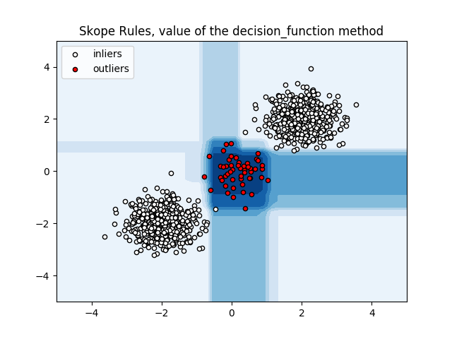

SkopeRules example¶
An example using SkopeRules for imbalanced classification.
SkopeRules find logical rules with high precision and fuse them. Finding good rules is done by fitting classification and regression trees to sub-samples. A fitted tree defines a set of rules (each tree node defines a rule); rules are then tested out of the bag, and the ones with higher precision are selected and merged. This produces a real-valued decision function, reflecting for each new sample how many rules (each weighted by respective precision) have found it abnormal.
import numpy as np
import matplotlib.pyplot as plt
from skrules import SkopeRules
print(__doc__)
rng = np.random.RandomState(42)
n_inliers = 1000
n_outliers = 50
# Generate train data
I = 0.5 * rng.randn(int(n_inliers / 2), 2)
X_inliers = np.r_[I + 2, I - 2]
O = 0.5 * rng.randn(n_outliers, 2)
X_outliers = O # np.r_[O, O + [2, -2]]
X_train = np.r_[X_inliers, X_outliers]
y_train = [0] * n_inliers + [1] * n_outliers
# fit the model
clf = SkopeRules(random_state=rng, n_estimators=10)
clf.fit(X_train, y_train)
# plot the line, the samples, and the nearest vectors to the plane
xx, yy = np.meshgrid(np.linspace(-5, 5, 50), np.linspace(-5, 5, 50))
Z = clf.decision_function(np.c_[xx.ravel(), yy.ravel()])
Z = Z.reshape(xx.shape)
plt.title("Skope Rules")
plt.contourf(xx, yy, Z, cmap=plt.cm.Blues)
a = plt.scatter(X_inliers[:, 0], X_inliers[:, 1], c='white',
s=20, edgecolor='k')
b = plt.scatter(X_outliers[:, 0], X_outliers[:, 1], c='red',
s=20, edgecolor='k')
plt.axis('tight')
plt.xlim((-5, 5))
plt.ylim((-5, 5))
plt.legend([a, b],
["inliers", "outliers"],
loc="upper left")
plt.show()
Total running time of the script: ( 0 minutes 0.492 seconds)